説得に応じない [梅吉]
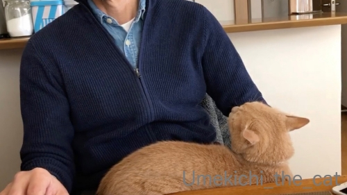
おとーさんのお膝の上でご機嫌よくしてたと思ったら・・・・・
梅吉さんの様子が怪しくなってきましたよ。
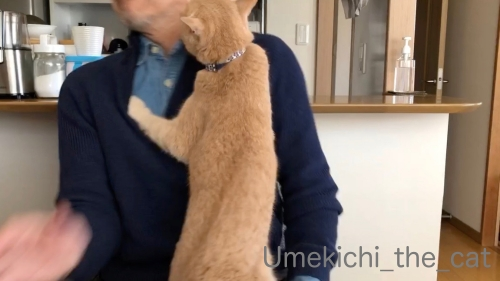
![[猫]](https://blog.ss-blog.jp/_images_e/101.gif) なんじゃ〜っ！！
なんじゃ〜っ！！
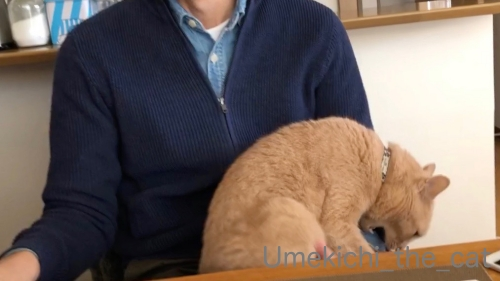
あごガブを阻止されたので腹いせに手をガブw
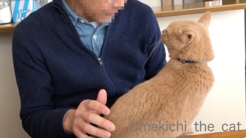
どーして急にそうなるんですか？おとーさん何もしてないでしょ？？
との説得も虚しく・・・・・
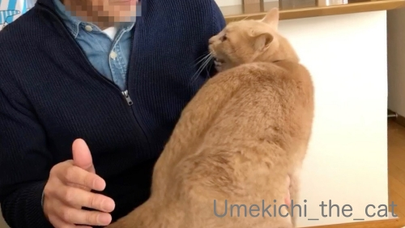
さらにやる気満々のねこ。
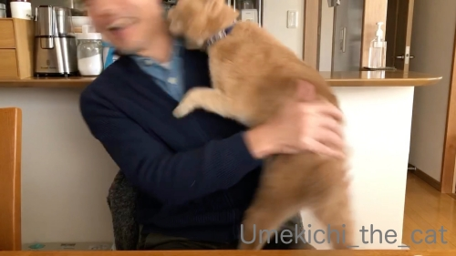
ブレブレ写真でモザイクかけなくても使えました（爆
なかなか臨場感にあふれているのではないか、と自己満足です。
おっとがすごく嬉しそうなのが笑えます(*>艸<)
梅吉がちゃんと急所、頸動脈あたりを狙っているのもすごいw
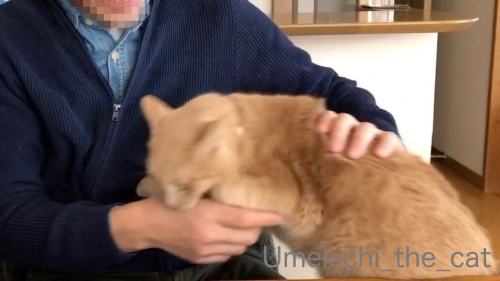
再度腹いせのガブ(⌒-⌒;
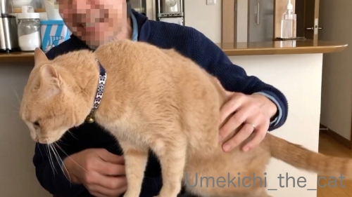
気が済んだのかさっさと立ち去ろうとする梅吉を引き留めようとするも
やっぱり聞き入れてもらえませんでした(*>艸<)
いったい二人の間に何があったんでしょ。
いつも愉快なお二人ですw
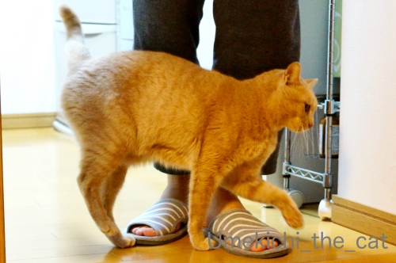
その数十分後、お風呂上がりのおとーさんに
全力でおやつをおねだりする変わり身の早いねこwwwww
 ↑ガブッと一押し↑
↑ガブッと一押し↑
週末、ゴッホ展を観に兵庫県立美術館へ行ってきました。
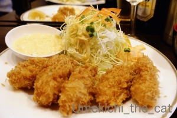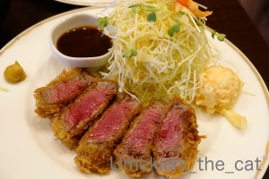
美術館近くの洋食屋さんでランチ。
カキフライにビーフカツレツ。どちらもジューシーで美味しかった＾＾
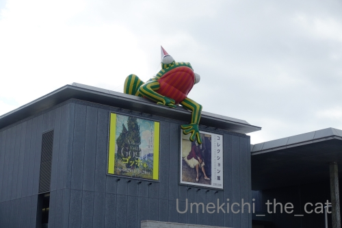
屋根の上に乗っているのは美術館のシンボルオブジェ「美（み）かえる」。
バルーンなので風でもぞもぞ動くのが生きてるっぽくてぞわぞわしましたw
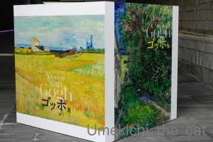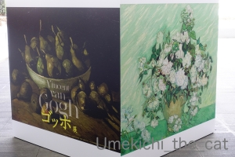
このキューブ状の看板、気に入りました！
ゴッホは日本でも大人気の画家だと思いますが
展覧会は拍子抜けするほど空いてました。
まだ会期始めだからなのか新型コロナウィルスの影響なのか・・・・・
いずれにしても絵をゆっくり鑑賞できてとても良かったです。
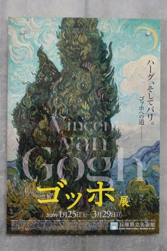
ゴッホの描く空のぐるぐるに心惹かれます。
夜のぐるぐるが有名ですが昼もぐるぐるなんですよ＾＾
晩年、心の病と闘いながら書いた絵。
心のうちをぶつけるように絵の具がいく重にも盛られています。
絵の具を「塗る」というより「のせてぐいっと引く」感じ。
どんな気持ちでひたすら絵筆を引き続けたのか・・・
その迫力に圧倒されました。
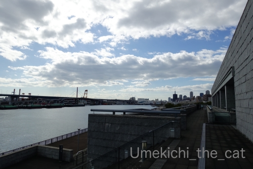
美術館のテラスからの眺め。
この空をゴッホが描いたなら・・・なんて想像しながら帰路につきました。
おとーさんのお膝の上でご機嫌よくしてたと思ったら・・・・・
梅吉さんの様子が怪しくなってきましたよ。
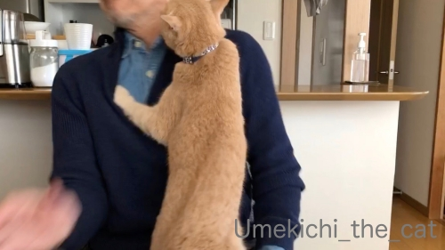
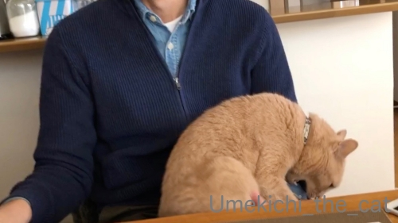
あごガブを阻止されたので腹いせに手をガブw
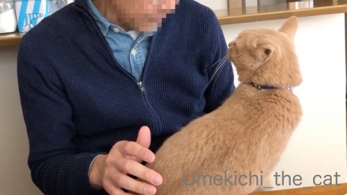
どーして急にそうなるんですか？おとーさん何もしてないでしょ？？
との説得も虚しく・・・・・
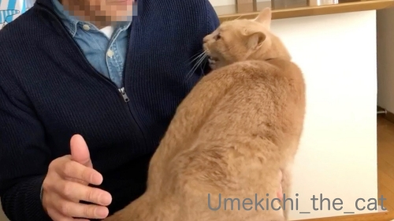
さらにやる気満々のねこ。
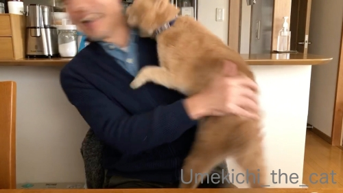
ブレブレ写真でモザイクかけなくても使えました（爆
なかなか臨場感にあふれているのではないか、と自己満足です。
おっとがすごく嬉しそうなのが笑えます(*>艸<)
梅吉がちゃんと急所、頸動脈あたりを狙っているのもすごいw
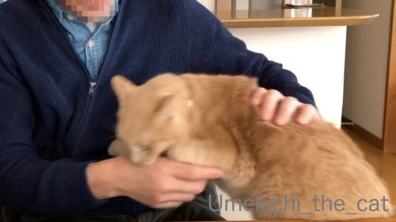
再度腹いせのガブ(⌒-⌒;
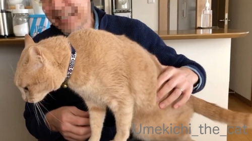
気が済んだのかさっさと立ち去ろうとする梅吉を引き留めようとするも
やっぱり聞き入れてもらえませんでした(*>艸<)
いったい二人の間に何があったんでしょ。
いつも愉快なお二人ですw
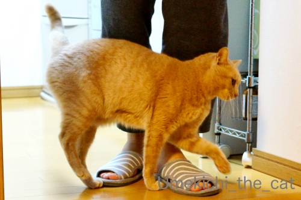
その数十分後、お風呂上がりのおとーさんに
全力でおやつをおねだりする変わり身の早いねこwwwww
週末、ゴッホ展を観に兵庫県立美術館へ行ってきました。
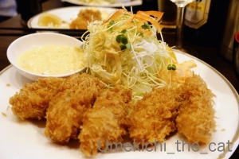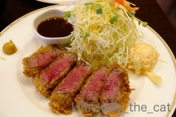
美術館近くの洋食屋さんでランチ。
カキフライにビーフカツレツ。どちらもジューシーで美味しかった＾＾
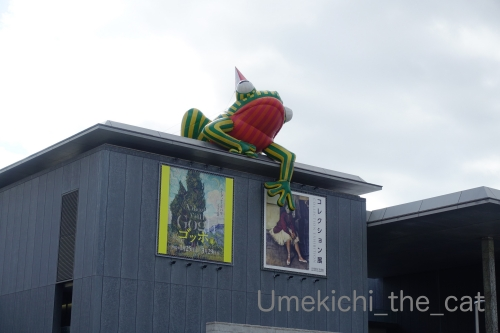
屋根の上に乗っているのは美術館のシンボルオブジェ「美（み）かえる」。
バルーンなので風でもぞもぞ動くのが生きてるっぽくてぞわぞわしましたw
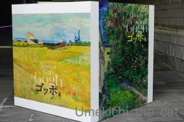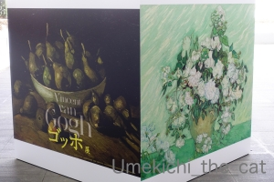
このキューブ状の看板、気に入りました！
ゴッホは日本でも大人気の画家だと思いますが
展覧会は拍子抜けするほど空いてました。
まだ会期始めだからなのか新型コロナウィルスの影響なのか・・・・・
いずれにしても絵をゆっくり鑑賞できてとても良かったです。
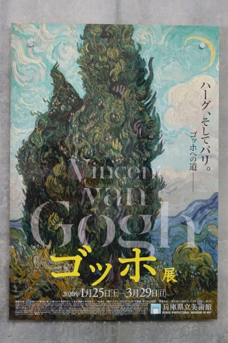
ゴッホの描く空のぐるぐるに心惹かれます。
夜のぐるぐるが有名ですが昼もぐるぐるなんですよ＾＾
晩年、心の病と闘いながら書いた絵。
心のうちをぶつけるように絵の具がいく重にも盛られています。
絵の具を「塗る」というより「のせてぐいっと引く」感じ。
どんな気持ちでひたすら絵筆を引き続けたのか・・・
その迫力に圧倒されました。
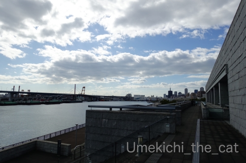
美術館のテラスからの眺め。
この空をゴッホが描いたなら・・・なんて想像しながら帰路につきました。

カフェオレ色の梅吉

梅吉 2023年8月10日 永眠


梅吉と出会った譲渡会

犬猫の理由なき殺処分ゼロ
妄想広告
UMEKICHI 光

爆発的に早い！
時々攻撃的！
Thanks to Mr.Boss365
爆発的に早い！
時々攻撃的！
Thanks to Mr.Boss365

加齢臭の臭いが嫌だったりして？（ﾟ□ﾟ）
私はゴッホよりカキフライとビーフカツレツを食べたいですw
by 英ちゃん (2020-02-03 00:11)
噛まれそうになりながら喜んでいる(?)おっと様が可笑しいです~。
by zombiekong (2020-02-03 00:13)
梅吉さん、夫さんの何が気に入らなかったのか(⌒-⌒; )
梅吉さんにガブってされても楽しそうな夫さんは
相手してもらうのが嬉しいんだろうなぁ( ^ω^ )
その気持ち、とってもよくわかります♪( ´▽｀)
私も、ガブってされても相手さえしてもらえるなら
足でも手でも差し出します(⌒-⌒; )
あっ、急所は防いじゃうけどw
by ニッキー (2020-02-03 07:18)
おおおおお！ゴッホ展良かったですね^^
梅吉さんVS夫さん、勝者は梅吉さんですね。
by ニコニコファイト (2020-02-03 07:21)
おとーさん、むっちゃうれしそうじゃないですかぁー笑
全力スリスリの様子からも、激甘とーさんなのでは？と推察いたします。
by liang (2020-02-03 07:21)
うーむ。じゃれてるのか、真剣に怒ってるのか
にゃんこ素人の私にはわかりません(^_^)
でもおとーさんが、喜んでるのんはわかりますよっ！
ビフカツの赤いとこが最高に美味しそう。。。
by よーちゃん (2020-02-03 07:25)
急所の頸動脈あたりを狙って！！野生の修正を忘れていないのですねｗ
お顔を見ると梅吉さんのガォ顔はマジっぽくも見えますね。
さすが梅吉さん普段は世を忍ぶ仮の姿のまったり系ですが
やるときはやるぜ感が溢れてますね♪
変わり身が早いのも猫の得意技のひとつかもしれません。
ゴッホ展(^^ ＨＡＴ神戸という埋め立て地？海がすぐそこな場所にあるんですよね。私はまだこちらに入ったことがないのですが、頻繁に「ガンダム展」をしていることでも有名です。
by marimo (2020-02-03 08:12)
梅吉さんとの間に何が？（笑
でも楽しそうなお二人さんですね(#^.^#)
by きぃ (2020-02-03 08:14)
梅吉さんに攻められて嬉しそうな感じですね！
ゴッホ展は東京から兵庫に行ったのですね(^^)
by ma2ma2 (2020-02-03 09:26)
梅吉さん、カラダの角度を変えて
狙ってますね（笑）
梅吉さんが怒り出したのはなぜか？
巻き戻して、二人の様子を見い！（笑）
相方さん、満面の笑顔、幸せが溢れてます。
ビーフカツ、食べたくなりました（笑）
by kiki (2020-02-03 09:40)
梅吉さーーん！狙いどころが恐いわぁ。
でも、おとーさん、うれしそうだから、ま、いっか(^^;)
おとーさんもおかーさんも、梅吉さんに何やられてもうれしいってやつですよね、きっと。
by ChatBleu (2020-02-03 10:17)
このスイッチって本当にわかりませんよね＾＾
今まで喜んでいたのにー、なんでなんで？と
なりますが、たいていの猫飼いさんはガブられても
喜びますよねー(￣ｍ￣〃)ぷぷっ!
頸動脈狙ってくるあたり、出来るオトコですねｗｗ
危ない危ない＾＾
美かえるーーｗ すごいのがいるのですね(笑)
ゴッホは日本でもそれ以外でも大人気の画家なのに
空いているとはビックリです(；ﾟДﾟ)
やっぱコロナウィルスのせいでしょーか＾＾
by カトリーヌ (2020-02-03 12:00)
噛まれそうになりながら喜ぶ、我が家も全く同じです(#^^#)
さらに噛まれて「痛い！」と叫びながら満面の笑顔。
猫飼いで無い人が見たらドン引きだと思います^^;
誰にも教わっていないはずなのに、オモチャのクマは首根っこ、下僕は手首の動脈あたりを狙ってくるのがスゴイと思います。
ゴッホ展空いていたのはラッキーでしたね！
人の頭越しに並んで・・とは充実度がケタ違いです。
休日は人混みに出かけくなくて、家でトップリーグ観戦が習慣になってきました♪
梅吉さんのまつ毛は白っぽいのですね！
確かにカフェオレ色でまつ毛だけ真っ黒だったらそこだけ目立ちすぎですよね^^;
by ゆきち (2020-02-03 12:37)
こんにちは。
お洒落なジッパータイプのカーデにダンガリーシャツ。
清潔感あり、お洒落なご主人様です（お伝え下さい・・・）
梅吉君、やりますね！！（笑）原因は何だろう。
多分、顎髭に反応ですね。猫仲間と思っています（笑）また、
おとーさん、外で「悪さ」している可能性あり？かな・・・
「頸動脈あたり」は危険です。梅吉君を犯罪猫にしてはいけません（笑）
素晴らしい躍動感・殺気ある写真です（爆）
スネスネ・軽快な足取りの梅吉君、猫らしい猫です。
カキフライにビーフカツレツ、二人だとシュアで楽しめるランチです。
ゴッホ展、空いているの拍子抜けですが、観賞にはベストな状況。
新型コロナウィルスにも負けないで、良い週末を過ごされた感じですね！？(=^･ｪ･^=)
by Boss365 (2020-02-03 13:02)
襲い掛かる梅吉さん、なんと嬉しそうなおっとさん！
これはぁ～何もしてない、じゃなくて、遊んでるんですよね。
梅吉さんのほうから仕掛けてくるから嬉しいんでしょ^m^
そうそう、我が家も私だったら適当にかわしながら遊べたけど～親に傷をつけると本気で嫌がられるので、暴れん坊になってきた時はあまりやらないように教えました^^;
カキフライもカツレツも美味しそう！
チューブ型の看板、面白いですね。
ゴッホが描いたらどうなるか…そういう空や景色、ありますね^^
by sana (2020-02-03 14:47)
おとーさん、笑ってるじゃありませんか:-)
満更でもなさそです。
by tama (2020-02-03 18:46)
さすが猫科の動物です。急所をキチンと押さえてますね^^
幸せそうな梅吉さんを見ることが出来てほっこりします。
by kou (2020-02-03 18:58)
えー！何が気に入らなかったのでしょう？
ウチの猫の場合、撫で続けていると怒ることはあります。
ゴッホの絵画、今使っているFire7のカバーが「星月夜」です。^^)
Youtubeで「ゴッホ 星月夜」で検索すると観ることの出来る、目の錯覚でグネグネ動いて見える星月夜（絵画だけでなく、ウチの猫の顔もグネグネ見えます）が気に入って定期的に観に行ってます。どなたが発見したのか分かりませんが素晴らしいです。^^;
by yes_hama (2020-02-03 21:54)
旦那さんの口元が緩んでますね～
男同士のコミュニケーションなのでしょうか？
うちのコはなかなか膝にのったりしてくれないので
おやつで誘導しようかと企んでいます（笑）
by 藤並 香衣 (2020-02-03 23:06)
甘々な旦那様ですね。対梅吉さんだけになのかしら？
by サンダーソニア (2020-02-04 00:07)
完全に喉元を狙ってますね！
寝てる間に始末されないかちょっと心配になります(≧▽≦)
と思ったらお風呂待ちとは案外仲良しなのか(笑)
そして中身レアのビフカツ美味しそう～
しかも分厚いお肉は口の中に幸せが広がります♪
by yamatonosuke (2020-02-04 00:56)
梅吉さんに、やりたいホーダイにやられてますね☆
でも、ご主人さま、嬉しそうなんだもの、笑っちゃう〜♪
美かえる、いいですね。
その昔、ゴッホ展に行ったことありますけど、すごく感動して、会場を
離れがたい気がしました。画集と展覧会とのギャップがこんなに凄い画家
さんは他にいないんじゃないかと思います。生の絵から出るエネルギーが
半端ないですね。
by nachic (2020-02-04 01:06)
我が家にはこういう対決を挑んでくる子が居ないので・・・。
膝に乗るだけで満足してるみたいです＾＾
by ぽちの輔 (2020-02-04 06:30)
嬉しそうな夫さん。
梅吉さん、本当はヤキモチ焼いてるんだったりして＾＾
モテル女は辛いねえ〜
by じゅらまろ (2020-02-04 11:46)
いつもご訪問＆コメントありがとうございます(^^♪
梅吉ちゃんなにがあったんでしょうかね？
ちなみにぱだおも朝寝坊していたら
うちのぼのちゃんにおでこをかじられました。
思い切り・・・けっしてあまがみではない・・・
ゴッホ展すいていてよかったですね
ぱだおの時はめちゃ込みでしたよ・・
いやーあの糸杉は３回ぐらい見直しました。
ゴッホが早く亡くなってしまったのが
実にもったいない・・・
by ぱだおくん (2020-02-04 17:55)
おとーさんの嬉しそうな顔に笑っちゃいましたｗｗ
襲われて笑うのは、もう、猫飼いあるあるですよねえ。
ゴッホ展空いていて良かったね。
やっぱりそういう空間で作品って観たいもの。
カキフライ＆ビーフカツレツ、これはどっちを選ぶか悩む！！(笑)
by リュカ (2020-02-05 13:00)
この空をゴッホが描いたら…
素敵な想像ですね。
美かえる、ちょっと見てみたい。
by ふにゃいの (2020-02-05 23:23)